Objetivo: Entender o papel das forças internas na configuração das estruturas e formas do
relevo terrestre.
Digite seu nome
Introdução
Vimos como ocorrem os processos de separação dos continentes através da
teoria da tectônica de placas.
Nesta aula, vamos iniciar nossos estudos sobre as transformações do relevo terrestre e sobre quais forças
estão envolvidas na modelagem de suas formas.
Ao final, você será apto a reconhecer o funcionamento dos agentes internos do relevo e ampliar seu
conhecimento sobre o Planeta Terra.
O que é o relevo?
O relevo terrestre não é apenas as formas da superfície terrestre, mas o resultado de forças internas e
externas da Terra em constante movimento.
O relevo é dinâmico, isto é, apesar de ser composto por objetos naturais como solo, rochas ou vegetação, ele
é mais do que isso, é um arranjo de componentes que trocam energias entre si e constituem nosso meio de
vida, nosso meio geográfico.
Podemos diferenciar o relevo pelas suas formas observando diretamente à paisagem. Uma montanha, como o Monte Everest, constitui uma forma elevada da crosta terrestre; uma planície é uma área mais baixa e um planalto uma área mais alta
com processos distintos de formação.
Para a Ciência, mais importante do que as formas são os processos (sequência de ações que levam a um
resultado) que geraram tais formas. Como surge uma montanha? Por que esse terreno está abaixo do nível do
mar?
Para podermos instalar uma usina hidrelétrica ou construir uma rodovia em determinada localidade é preciso
estudar a dinâmico do relevo. Caso contrário, corremos o risco de degradar ou sofrer consequências naturais
do meio em que estamos inseridos.
Enchentes em cidades ou a destruição do solo pela mineração são alguns exemplos de interferência do homem em
seu meio de vida.
Por que há diversos tipos de relevo?
As diferentes feições da superfície terrestre são resultado de agentes internos (endógenos) e agentes
externos (exógenos).
Os agentes internos que vamos estudar são
o tectonismo, vulcanismo e os terremotos (abalos
sísmicos). Os agentes externos estão relacionados com o intemperismo e a erosão (assunto da próxima aula).
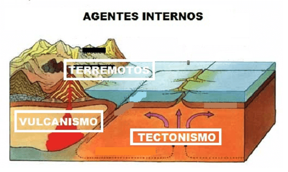
Fonte: http://geolibertaria2.blogspot.com/
Tectonismo
Vimos que as placas tectônicas são grandes porções sólidas da crosta terrestre em movimento e que ocorrem
choques entre elas. Dessas colisões podem ocorrer deformações nas rochas e surgirem cadeias de montanhas e
diferentes feições do relevo.
A Terra é um planeta ativo com uma grande variedade de processos devido ao seu calor interno e manifestado
pelos movimentos das placas. Essas forças do interior da Terra que atuam de forma lenta e prolongada na
crosta terrestre é chamado de tectonismo.
As rochas que constituem as placas tectônicas podem sofrer dobramento ou falhamentos dependendo das
forças do encontro das placas.
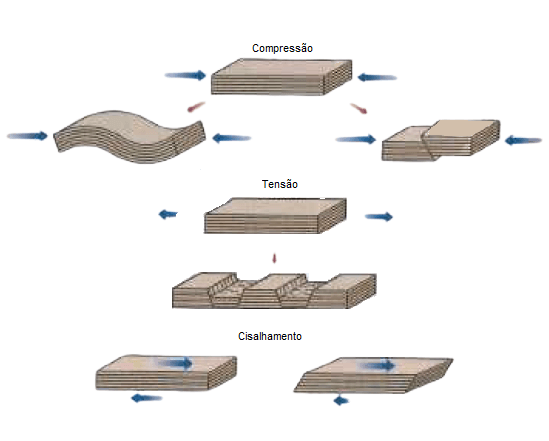
Fonte: Wicander e Monroe (p.216).
A compressão das rochas causa seu encurtamento de suas camadas por dobramento ou falhamentos. A tensão estira
as camadas e causa falhamentos.
Portanto, temos basicamente dois principais movimentos das placas tectônicas: os movimentos horizontais,
chamado de orogênese, e os movimentos verticais, chamado de epirogênese.
Vamos ver cada um deles.
Orogênese
É o movimento produzido pela compreensão ao longo dos limites convergentes das placas tectônicas. São
movimentos horizontais, com duração geológica não muito extensa e de grande intensidade, que formam
montanhas como os Alpes na Europa, a Cordilheira dos
Andes na América do Sul e os Himalaias na Ásia.
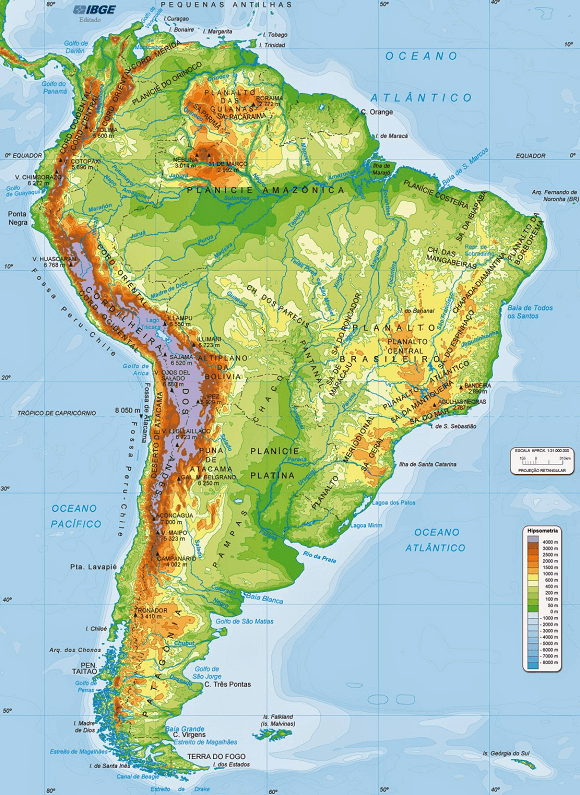
Mapa da América do Sul. Fonte: Atlas geográfico IBGE.
As cadeias de montanhas formam um conjunto alongado de elevações da crosta e ocupam uma faixa estreita
próxima a margem continental ativa (zona de colisão de placas) onde podemos encontrar processos de falhas e
de dobramentos, muitas vezes conectados.
Os dobramentos ocorrem devido as pressões laterais das forças tectônicas. Nas áreas de rochas menos rígidas
elas são literalmente dobradas. Nas áreas
em que as rochas são mais resistentes podem ocorrer falhas.
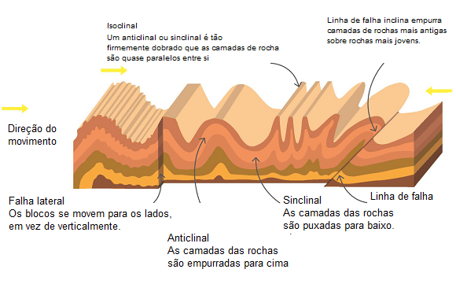
Fonte: Geography, (2019. Adaptado).
A geologia denomina de Anticlinal as camadas de rochas dobradas em arco com a parte mais
elevada para cima, enquanto as rochas com formato de calhas com uma área mais rebaixada são chamadas de
Sinclinal. Na figura
abaixo vemos o exemplo:
Podem ocorrer inúmeros tipos de dobramentos, dependendo da estrutura geológica, das atividades tectônicas e
da capacidade das rochas em resistir aos movimentos verticais, por exemplo.
Epirogênese
Ao contrário da orogênese, que é mais localizado e rápido, a epirogênese possui um movimento mais lento e
abrange grandes dimensões das placas em áreas mais estáveis.
A epirogênese atua na direção vertical, no qual pode elevar ou rebaixar grandes blocos continentais. O soerguimento (elevação) ou a subsidência
(rebaixamento) ocorrem devido ao movimento isostático de acomodação da crosta sobre o manto superior.
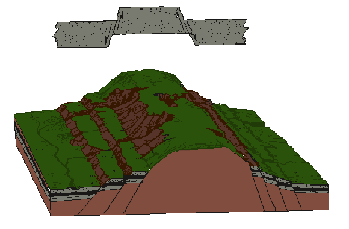
Fonte: SUERTEGARAY (2003, p.76, adaptado).
Os blocos mais elevados são denominados de Horst, enquanto o bloco afundando é denominado
de Graben.
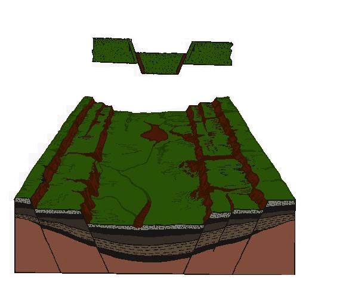
Fonte: SUERTEGARAY (2003, p.75, adaptado).
É importante ressaltar que os movimentos epirogenéticos e orogenéticos não podem ser entendidos e estudados
de forma separada, uma vez que pertencem e são resultado da deriva continental e das colisões entre as
placas tectônicas.
O movimento vertical desencadeado pela epirogênese resulta em diversas falhas na crosta terrestre. Isso
ocorre pelo acúmulo de energia nas bordas das placas e sua consequente liberação, geralmente em forma de
abalos sísmicos (terremotos).
Os principais tipos de falhas dependem
da estrutura geológica e da resistência das rochas, as principais estão apresentadas na figura abaixo:
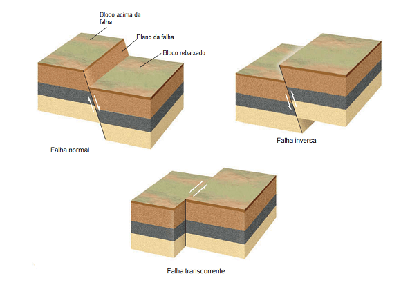
Fonte: Press (2006).
A falha normal ocorre quando blocos superiores se movem para baixo em relação ao bloco inferior. Já na falha
inversa, é o bloco superior que se move para cima em relação ao bloco inferior. Na falha transcorrente ou
transformante os movimentos são paralelos à direção da falha, como em San Andreas, que atravessa a costa da
Califórnia nos Estados Unidos.
Outro agente interno responsável pela modelagem do relevo é o vulcanismo. Vamos ver suas principais
características.
Teste o seu conhecimento!
(Unimontes) Observe a figura:
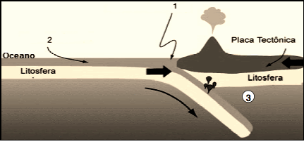
Os números 1, 2 e 3, na figura acima, representam, respectivamente:
Teste seu conhecimento
Qual a idade da crosta oceânica?
Vulcanismo
Por que o interior da Terra é quente? A primeira evidência é a de que os elementos radioativos no interior
do manto, do núcleo sofre desintegração ou decaimento (processo pelo qual um elemento se torna outro
liberando, entre outras coisas, calor).
Esse calor intenso chega à superfície terrestre através de erupções vulcânicas em forma de lava, que é rocha
em estado líquido, depois resfria-se tornando-se rochas vulcânicas duras.
Esse processo contribui para diferentes tipos de relevos de acordo com o movimento de placas tectônicas e da
atividade das correntes de convecção. Observe abaixo o esquema do funcionamento de um vulcão:
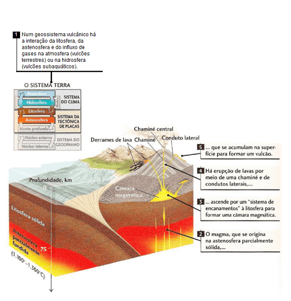
Fonte: Press (2006, p.144).
O vulcanismo é um conjunto de processos pelos quais o magma e todo seu conteúdo de gases, materiais piroclásticos (rochas, cinzas,
fumaça tócinturãoxicas etc.) são forçados a sair para a superfície ou a entrar novamente na astenosfera.
Já um vulcão é uma parte elevada do relevo ou uma montanha ao redor de uma abertura por
onde a lava é expelida além de outros materiais relacionados as erupções.
Além dos fluxos de lava, material rochoso escaldante, que pode destruir construções e cobrir áreas
destinadas à agricultura, os vulcões emitem gases tóxicos e cinzas.
Esses materiais podem se fixar na atmosfera e causar diversos problemas de saúde para a população,
principalmente, respiratórios. Também pode influir no clima e baixar a temperatura devido ao impedimento de
entrada de luz solar em determinada região e provocar acidentes aéreos causando falhas de motores através de
uma nuvem de cinzas.
Outros materiais piroclásticos são o lapilli, pequenos fragmentos de rochas,
blocos que são arrancados dos condutos vulcânicos durante o fluxo de lava e bombas, expelidas tal como
uma bolha que se solidifica no ar.
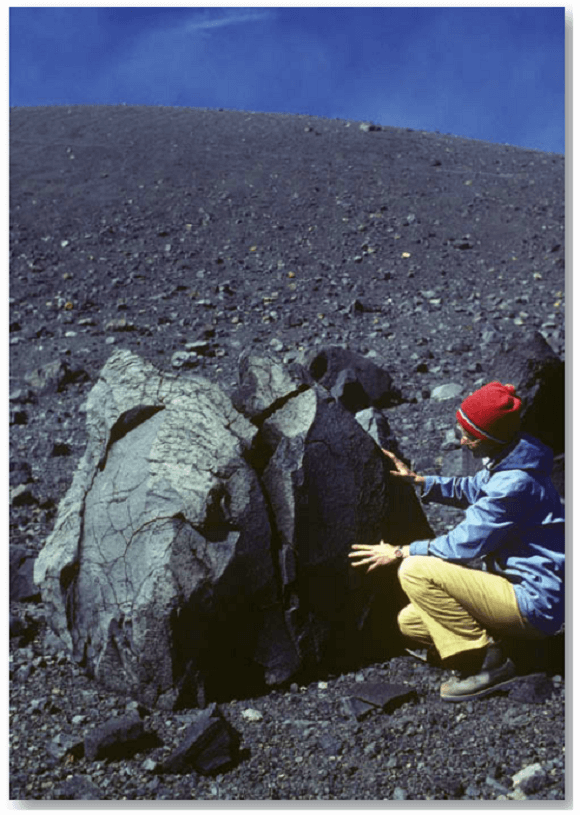
Vulcanologista Katia Krafft examina uma bomba vulcânica
ejetada do vulcão Asama, Japão. Mais tarde, a cientista foi morta por um fluxo piroclástico no Monte japonês
Unzen. Fonte: Press (2006, p.147).
Os vulcões podem estar ativos ou adormecidos ou mesmo extintos. Entre os vulcões ativos destacam-se: Kilauea
na ilha do Havaí; o monte Fuji no Japão; o Vesúvio na Itália; o Santa Helena nos Estados Unidos; o Pinatubo
nas Filipinas, e o Fagradalsfjall na Islândia, dentre outros.
A maioria dos vulcões está localizado nos limites ou perto dos limites de placas. Dois cinturões de vulcões
são reconhecidos. O cinturão do Pacífico
ou Círculo de Fogo contém cerca de 60% de todos os vulcões ativos, cerca de 20% no
cinturão Mediterrâneo, e
a maior parte dos restantes está localizada ao longo das cadeias mesoceânicas. (WICANDER, 2009).
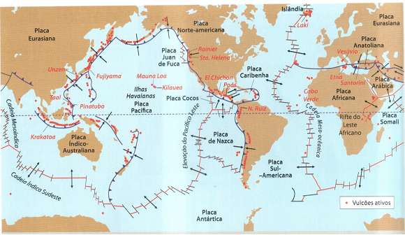
Fonte: Wicander (2009, p.118).
Os diversos
formatos dos vulcões são consequências
de suas erupções.
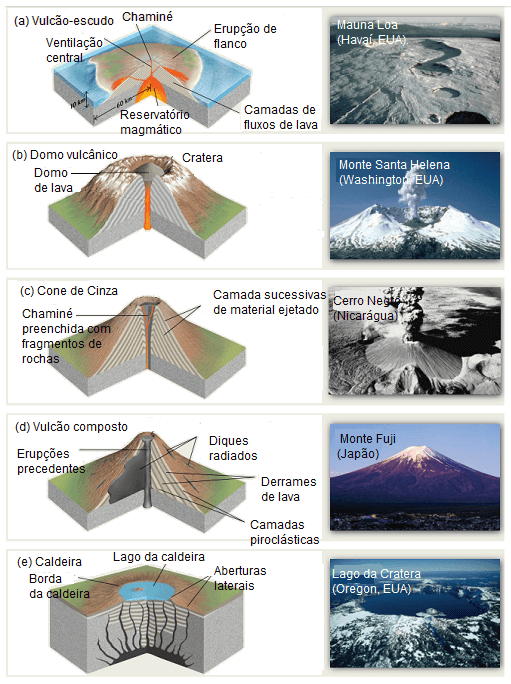
Fonte: Press (2006, p.149. Adaptado).
Vulcanismo intraplaca (Hotspot)
Existem vulcões que não estão localizados nos limites divergente ou convergente de placas tectônicas. Eles
estão localizados no interior de uma placa, como os vulcões Kilauea e Mauna Loa, no Havaí. Mas como o
magma pode extravasar e sair pela superfície estando distante dos limites das placas? As ilhas havaianas no
centro da Placa do Pacífico ilustram essa ideia.
Esse tipo de atividade vulcânica está associado aos chamados pontos quentes
(hotspots). As ilhas vulcânicas do Havaí formam uma cadeia montanhosa submarina que estão em parte submersas
ao longo de 6 mil km de extensão. As rochas nessa região são progressivamente mais antigas ao longo da
cadeia. O aparecimento dessas ilhas são o resultado de um canal profundo que sai do manto. Como a placa do
Pacífico está em movimento, ela transporta um vulcão tornando-o inativo, e ao mesmo tempo, proporciona à
formação de um novo vulcão que repete o processo.
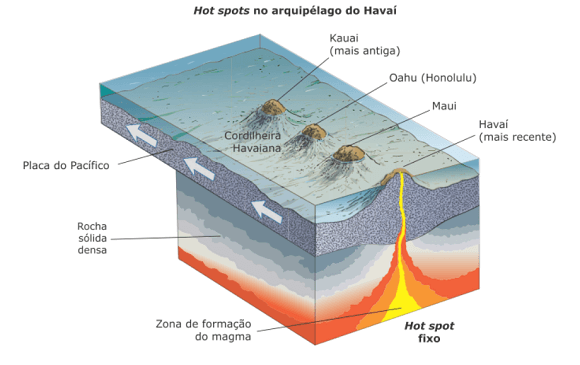
Vulcanismo e hidrografia
O vulcanismo interage com outras esferas da Terra como atmosfera e hidrosfera . Os vulcões são
ativos mesmo quando não há lava fluindo de suas crateras.
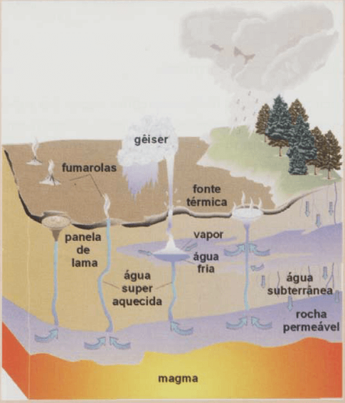
Fonte: TEIXEIRA, (2009.p.358).
Os vulcões podem emitir fumaça e vapor por meio das fumarolas. Essas são manifestações superficiais da
circulação de água que ocorre na interação com o magma e rochas em fusão, extremamente quentes. Após ter
contato com altas temperaturas, essa água se aquece e retorna para a superfície através de fontes quentes ou
de gêiseres.
Como ocorre esse processo de saída de água quente para a superfície?
As águas das chuvas penetram nas rochas porosas, tal como em uma esponja, formando um reservatório, um
aquífero. Como o magma está abaixo dessa água, geralmente entre 5 e 7 km de profundidade, ele transfere
calor e aquece o aquífero. Com o aumento da pressão a água superaquece sem, no entanto, ferver e tornar-se
mais leve (menos densa) do que a água fria que se infiltra no aquífero. Com o tempo, a temperatura aumenta
pouco a pouco até que, em um dado momento, uma pequena porcentagem entre em ebulição. Com o aumento do
volume devido a ebulição, a água não tem por onde escapar, a não ser pelos condutos dentro das rochas. Assim
ela rompe pela superfície em um violento jato de água. Após a redução da pressão o processo é interrompido
enquanto a recarga do aquífero continua para que o processo possa ser reiniciado. Fonte: TEIXEIRA, (2009.p.358, Adaptado).
O gêiser mais famoso é oOld
Faithful e está localizado no parque de Yellowstone nos Estados Unidos. Ele
emite uma fonte de água quente, que jorra de forma intermitente, em um intervalo de, aproximadamente, 65
minutos, com grande força e com um barulho que se assemelha a um rugido trovejante.
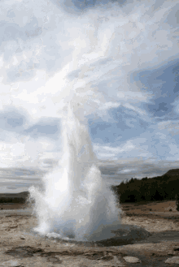
O vapor e a água quente formados por essa atividade hidrotermal pode ser canalizado e gerar energia
geotérmica. Outro aspecto importante desse processo envolve a deposição de minerais metálicos de grande
valor econômico quando há o encontro de magma com a água.
Teste seu conhecimento
Qual a relação entre vulcões e placas tectônicas?
Teste seu conhecimento
Qual a relação entre erupções e tipos de vulcões?
Terremotos (abalos sísmicos)
Não há nada mais exemplar sobre a dinâmica geológica da Terra do que sentir um tremor no chão onde pisamos.
A Terra é ativa e instável, quer dizer, não há ainda como prever o que irá acontecer quando se trata de
terremotos.
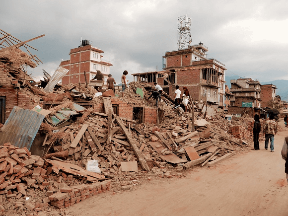
Terremoto, Nepal, 2015. O país está localizado entre a
Índia e o Tibete, conhecido por seus templos e pela Cordilheira do Himalaia, onde fica o Monte Everest.
Fonte: https://www.flickr.com/photos/
110419464@N05/17290940465.
Os terremotos são fenômenos naturais, assustadores e destrutivos, ligados a uma liberação súbita de energia,
geralmente ocorrem em zonas bem definidas nos limites transformantes, divergentes e convergentes de placas
tectônicas.
Os terremotos são fenômenos naturais, assustadores e destrutivos, ligados a uma liberação súbita de energia,
geralmente ocorrem em zonas bem definidas nos limites transformantes, divergentes e convergentes de placas
tectônicas. Veja o exemplo:
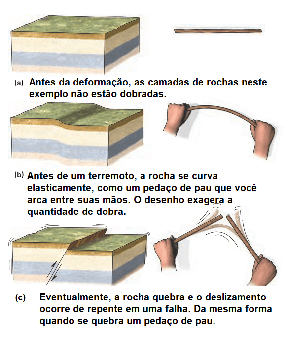
Fonte: MARSHAK (2015, p.348, Adaptado).
Os terremotos são o resultado da tensão acumulada ao longo do tempo. Essa tensão surge a partir da pressão
tectônica que deformam as rochas em ambos os lados. Quando a tensão ultrapassa a resistência das rochas,
estas sofrem um deslizamento liberando a energia acumulada e causando o terremoto.
O ponto dentro da placa onde a energia é liberada é chamado de foco ou hipocentro. Já o ponto na
superfície onde o terremoto realmente se manifestou é o epicentro, muito comentado em reportagens
televisivas.
O estudo dos terremotos é realizado pela Sismologia através de um aparelho que registra, detecta e mede as
vibrações produzidas por um terremoto, como as ondas P e S (visto na aula 08).
O sismógrafo registra tanto o movimento
horizontal como vertical geradas por essas.
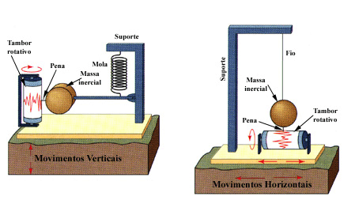
Como medir a quantidade de energia liberada por um terremoto?
Para mediar a chamada magnitude de um terremoto, o sismólogo Charles F. Richter criou uma
escala sem limites começando pelo valor
1.
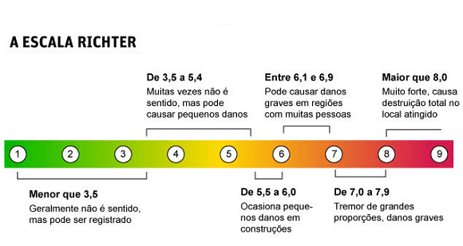
Richter usou uma escala logarítmica de base 10. Assim, cada aumento no número da escala representa 10 vezes o
aumento da amplitude da onda.
A avaliação dos efeitos dos terremotos varia de acordo com a escala de Richter, mas também há diversos
fatores envolvidos para a representação quantitativa e qualitativa desse fenômeno.
A intensidade, por exemplo, é medida com a escala de Mercalli. Ela não está baseada nas
ondas sísmicas, como na escala de Richter. Trata-se de uma escala qualitativa e dos efeitos sobre as pessoas
e estruturas, variando de 1 a 12, com o grau 1 correspondendo a um tremor não sentido pelas pessoas e o grau
12 como uma alteração calamitosa do relevo da região afetada.
Os terremotos podem causar efeitos destrutivos como tremor de terra, ondas sísmicas marinhas, choque
psicológico, inquietação civil, deslocamento de milhares de pessoas de suas casas, muitos mortos e feridos,
dentre outros.
Os terremotos podem causar efeitos destrutivos como:
tremor de terra
ondas sísmicas marinhas
choque psicológico
inquietação civil
deslocamento de milhares de pessoas de suas casas
muitos mortos e feridos
dentre outros.
Dependendo da duração do tremor, distância do epicentro, da estrutura geológica da área afetada, da qualidade
das construções etc., um terremoto pequeno pode causar mais estragos do que um de magnitude maior.
Teste seu conhecimento
1991: Erupção do Pinatubo
No dia 9 de junho de 1991, a erupção do vulcão Pinatubo trouxe destruição e morte às Filipinas. A catástrofe
teve influência também sobre o clima mundial.
O cume do Monte Pinatubo explodiu como uma rolha, formando uma gigantesca cratera. De 1.800 metros de altura,
o monte diminuiu para apenas 1.400 metros. Os moradores da região haviam sido avisados a tempo e
transportados para abrigos.
Mesmo assim, a catástrofe do Pinatubo causou a morte de aproximadamente 800 pessoas. A dimensão real das
consequências da pior erupção do século só pôde ser vista na manhã seguinte. Toda a região ao redor do Monte
Pinatubo estava coberta por uma camada de cinzas. Antes de entrar em erupção em 1991, o vulcão estava
inativo há 600 anos.
Não existe pergunta boba! A Ciência é feita de perguntas!
P:
Qual a diferença entre o magma e a lava?
R:A primeira diferença está relacionada a localização. O magma está
situado abaixo da crosta, enquanto a lava é o material rochoso que extravasa à superfície. A segunda
distinção é em relação as propriedades químicas. A lava ao sair do vulcão entra em contato com o oxigênio e
libera gases, o que modifica sua estrutura.
P: Existe terremoto no oceano?
R:
Sim. Em dezembro de 2004, um gigantesco maremoto atingiu o Sudeste Asiático, particularmente a Indonésia, o
Sri Lanka, a Índia e a Tailândia, provocando cerca de 220 mil mortes. Logo a palavra japonesa tsunami [de tsu, ‘porto’, ‘ancoradouro’;
e nami, ‘onda’, ‘mar’], muito usada na Ásia para se referir a esse fenômeno, tornou-se conhecida em todo o
mundo.
Ela designa as ondas gigantescas formadas por um maremoto, que nada mais é que um terremoto no fundo do mar
e resulta do choque de placas tectônicas. Em março de 2011, ocorreu um maremoto no oceano Pacífico perto do
Japão, que deu origem a um tsunami no litoral daquele país, que destruiu construções e até provocou o
vazamento radioativo de uma central nuclear. As ondas do tsunami com mais de 10 metros de altura penetraram
cerca de 10 km na faixa litorânea a leste do Japão e deixaram, além do grave acidente nuclear e destruição
de edificações, quase 16 mil mortes e 27 mil pessoas feridas.
Um tsunami não é uma única onda, mas uma série de ondas que podem viajar pelo oceano com velocidade de mais
de 800 km/h. No maior maremoto registrado nos últimos 50 anos, o de dezembro de 2004, as enormes ondas caíam
sobre as casas, a força da água levava tudo e muitas praias viraram necrotérios a céu aberto. Muitas pessoas
morreram durante os tsunamis depois de voltar para casa, porque acharam que as ondas tinham acabado.
Os tsunamis em geral são causados pelo aumento ou pela baixa repentina de parte da crosta terrestre sob o
oceano ou perto dele. Mas ondas tsunamis de menor força também pode ser geradas por atividade vulcânica, e
são mais comuns no oceano Pacífico.
Quando o tsunami entra na linha costeira, sua velocidade diminui, mas a altura aumenta. Um tsunami de alguns
centímetros ou metros de altura pode atingir de 30 a 50 m de altura na costa, com força devastadora. Para
quem está na praia, não há sinais da aproximação de um tsunami. O primeiro indício costuma ser uma elevação
da água, mas não igual à das tempestades.
Em 1883, um tsunami formado depois da erupção do vulcão Cracatoa, entre as ilhas indonésias de Java e
Sumatra, matou 36 mil pessoas. Em 1908, um terremoto provocou enchentes e inundações que mataram quase 100
mil pessoas na Sicília, Itália. Em julho de 1998, dois terremotos submarinos criaram tsunamis que mataram
pelo menos 2,1 mil pessoas perto da cidade de Aitape, na costa norte de Papua-Nova Guiné. Moradores disseram
que as grandes paredes de água, que avançaram 2 km, soavam como caças pousando. Fonte:
VESENTINI (2013, p.217).
P:
Os vulcões só destroem o Planeta ou eles têm benefícios?
R:
Os vulcões, apesar de seu poder destrutivo, possuem inúmeros benefícios. Durante a formação do Planeta, a
própria atmosfera e os oceanos pode ter sido originado em atividades vulcânicas no passado distante.
Os solos são extremamente férteis próximos aos vulcões devido aos minerais distribuídos no solo. As rochas
vulcânicas, os gases e o vapor são importantes fontes de materiais industriais e químicos, como a
pedra-pomes, o ácido bórico, a amônia, o enxofre, o dióxido de carbono e alguns metais. A água do mar que
circula nas fissuras do sistema vulcânico das dorsais oceânicas é um dos principais fatores na formação de
minérios e na manutenção do balanço químico dos oceanos. A energia térmica do vulcanismo está sendo cada vez
mais aproveitada. A maioria das casas de Reykjavík na Islândia, é aquecida por água quente, encanada a
partir de fontes quentes.
O vapor geotérmico originado da água aquecida em contato com rochas vulcânicas quentes abaixo da superfície,
é explorado como fonte de energia para a produção de eletricidade na Itália, na Nova Zelândia, nos Estados
Unidos, no México, no Japão, dentre outros. Fonte: Press (2006. p.167).
Questione a realidade
Em dupla, escreva no caderno e explique a relação entre tectonismo, vulcanismo e abalos sísmicos
baseado no tremor registrado na reportagem abaixo:
Na madrugada do dia 9 de dezembro de 2007, no
distrito de Caraíbas, município de Itacarambi, norte de Minas Gerais, a cerca de 400 quilômetros de
Brasília, foi registrado um tremor de terra de 4,9 graus na escala Richter. Observe o mapa e a
ilustração a seguir e explique a ocorrência desse tremor em Minas Gerais e suas particularidades.